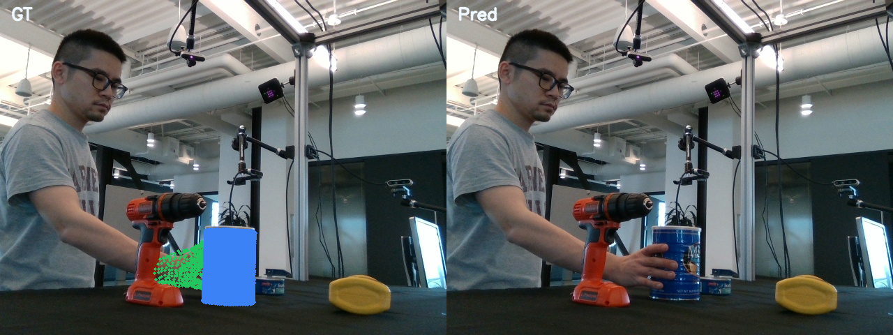

Frame 30 Compare
The image-space overlay remains empty because mesh extraction has already collapsed upstream. This plot is included as a downstream sanity check, not as the root-cause layer.
This node extends the earlier frame-30 diagnosis by tracing the native TRELLIS field through
80 optimization steps. The main finding is that bad overlay is downstream of a collapse in the
decoded SDF field. Hand reaches all_nonnegative and empty mesh at the same step,
while object collapses earlier: it already produces empty mesh and zero geometry loss before the
full field becomes globally nonnegative.
Hand stays non-empty until step 40. At step 41, the sparse field becomes
fully nonnegative, mesh extraction returns zero vertices, and geo_loss drops to zero.
Object already hits empty mesh at step 27 while the field is still mixed_sign.
By step 37 it becomes fully nonnegative. This means “no extracted surface” can happen
before the entire field loses all negative values.
Once mesh extraction fails, geo_loss = 0 and only reg_loss remains. That gap
first appears at step 41 for hand and step 27 for object.
GT camera projection is still valid and dense. The first broken layer in this experiment is the
decoded field / extraction path, not world -> camera or camera -> image.

The image-space overlay remains empty because mesh extraction has already collapsed upstream. This plot is included as a downstream sanity check, not as the root-cause layer.